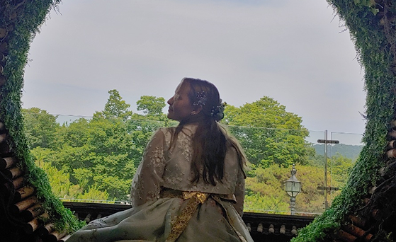
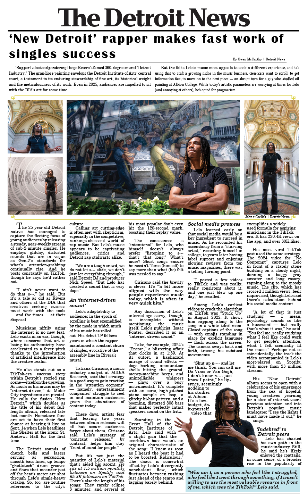
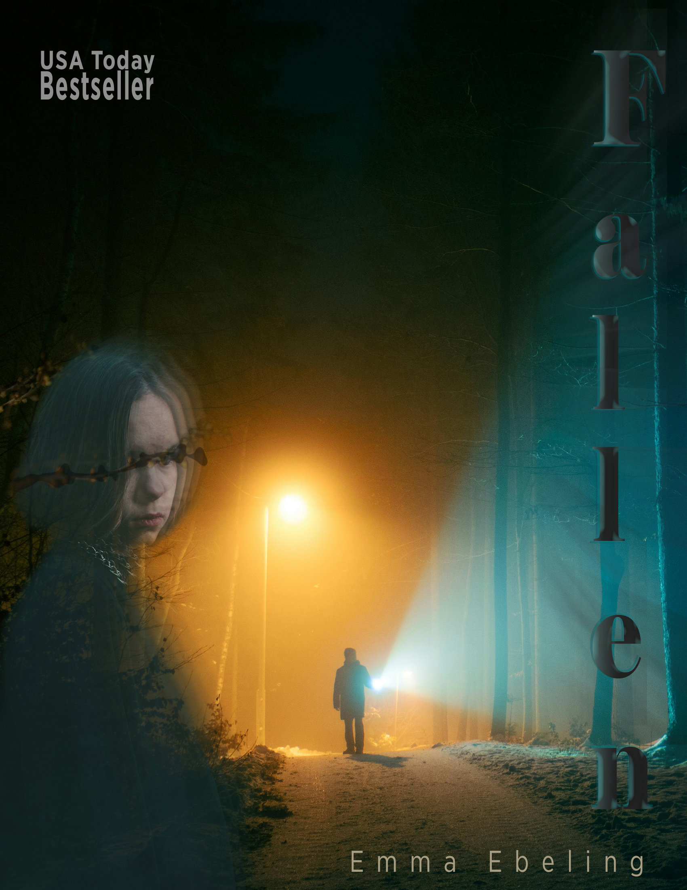

Game Design Documentation
Pitching, systems framing, and design rationale artifacts.
Open sample PDFGame Design + Information Science
I design digital experiences rooted in research, storytelling, and interface craft. This portfolio highlights selected work across game design, information science, and interdisciplinary Adobe multimedia design.

Nice to meet you. I am Emma Ebeling, tagged EGE for short. I have a BS in Games and Interactive Media and a BA in Information Science. Most interestingly, part of my minor in Korean Language and Culture was completed during a study abroad at Yonsei University in Seoul, South Korea.
I design most forms of digital media and use human behavior analysis and research to inspire my human-centered designs. I am experienced in documentation, design, and user research, with work spanning interaction design, digital information, and experience design.
Placeholder tiles are set up so you can keep uploading and swapping in finished thumbnails, videos, and case studies over time.
Pitching, systems framing, and design rationale artifacts.
Open sample PDFNarrative and interaction flow planning for player-facing writing systems.
Open sample diagramMenu architecture and visual hierarchy for game interfaces.
Open sample PDFFigma and Swift-oriented prototyping for mobile experiences.
Open Figma prototypeWebsite architecture and usability-centered prototyping workflows.
Open web/app prototypeDigital information design for communication campaigns.
Open sample imageResearch synthesis and data-informed recommendations.
Open sample PDF



Use this card style for your next upload.
Reach me directly at ebelinge@msu.edu.
{kind=link}